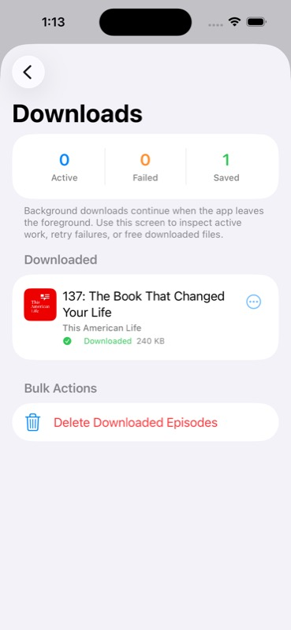

Current truth
Status Snapshot
Full validation is not complete. This report is the live structure that will be updated as scenarios are expanded, replay cassettes are added, simulator evidence is captured, UX issues are filed, fixes are merged, and the same scenarios prove the fixes.
Architecture gate
NMP Sync And Boundary Status
Current NMP pin
`Cargo.toml` pins NMP crates to `1.0.0-rc.1` at git rev `1fc3e6bea390224cef30e37d2ccaa90615197521`. The report will track whether Pod0 remains synchronized with NMP master and with fixes observed in the sister repo `../chirp`.
Non-negotiable rules
Rust owns state machines, policy, protocol semantics, routing, time, and bounded projections. Native shells render and execute raw OS capabilities. Every scenario must prove that failures surface in state and that hot paths stay bounded.
BDD inventory
Scenario Coverage
A dedicated scenario-generation agent is expanding this from the current 73 simulator scenarios into hundreds of Given/When/Then cases with required screenshots, metrics, cassette dependencies, and NMP rule coverage.
Per scenario
Required Evidence Contract
BDD proof
Given/When/Then steps, fixture state, app build, simulator device, and deterministic pass/fail criteria.
Visual proof
Screenshot at every meaningful step, UI tree when assertions depend on accessibility or hierarchy.
UX critique
Modern iOS 26 fit, layout density, accessibility, navigation clarity, animation polish, and deep liquid glass use.
Performance metrics
Launch, tap latency, scroll FPS, hitch count, memory, CPU, audio start latency, FFI cadence, network and LLM latency.
Replay cassettes
LLM/STT/provider request and response envelopes, tool-call traces, failure variants, and latency metadata with secrets redacted.
Issue closure
Every imperfection gets a GitHub issue, an owner branch, a PR, and revalidation evidence before the row turns green.
Performance standard
Budgets To Measure
| Metric | Target for a 2026 premium podcast app | Current evidence |
|---|---|---|
| Cold launch | Fast enough to feel immediate; no blank gate for renderable state. | Pending simulator run. |
| Playback start | Sub-second for cached media, tightly bounded for streamed media. | Pending D1/D6 run. |
| Scroll and transitions | 60 fps, no avoidable main-thread decode or layout stalls. | Pending Instruments / XCTest metrics. |
| FFI updates | View-scoped, bounded, coalesced at or below 60 Hz. | Pending projection cadence capture. |
| LLM flows | Observable latency, cancellable UI, cassette replay coverage for all providers. | Pending cassette harness. |
Current visual evidence
Screenshot Gallery
These are the screenshots currently available in the repository. Scenario-specific runs will add hundreds more, each with critique and metrics beside the image.



Defect pressure
Issues And Fix Loop
As each scenario is run, every visual, UX, performance, cassette, NMP, or behavior gap must be filed in GitHub and linked here with its fix PR and revalidation evidence.
#700
Expand Pod0 BDD catalog to hundreds of executable scenarios
#701
Add cassette record/replay for LLM and STT scenario validation
#702
Publish per-scenario performance metrics in the Pod0 validation report
#703
Populate gh-pages report with screenshot-level UX critique
#704
Audit Pod0 against latest NMP and chirp-shipped fixes